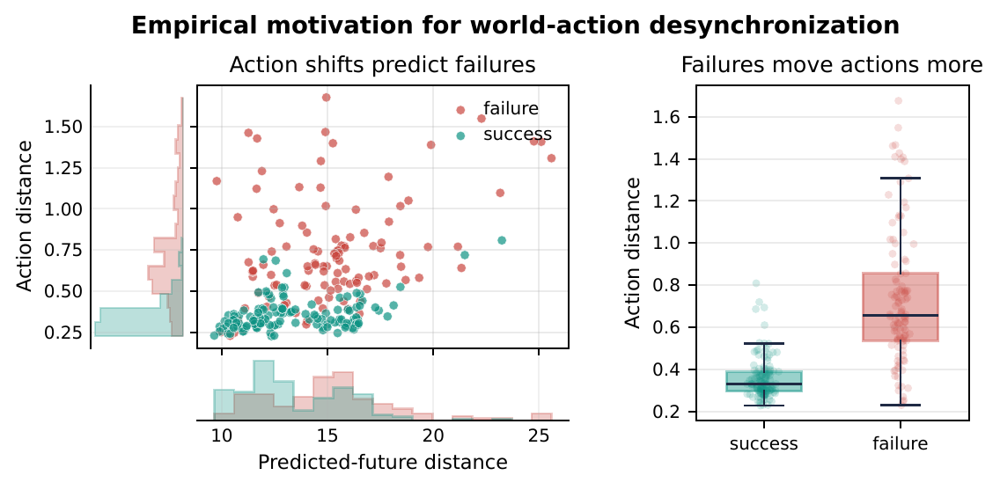
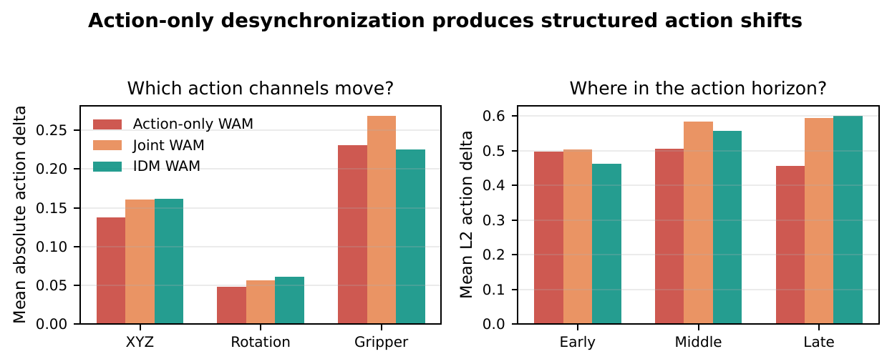
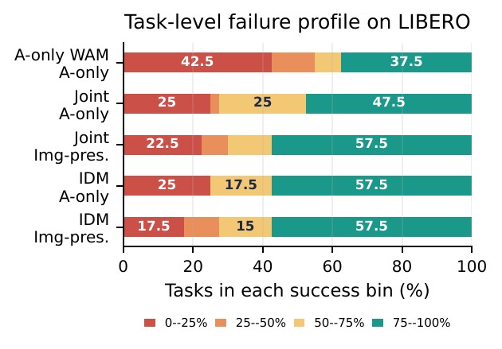
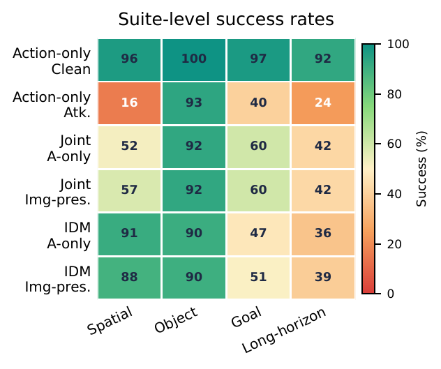
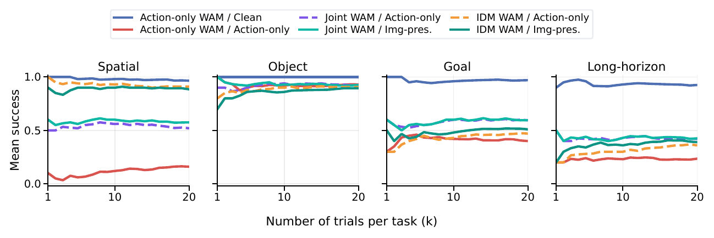
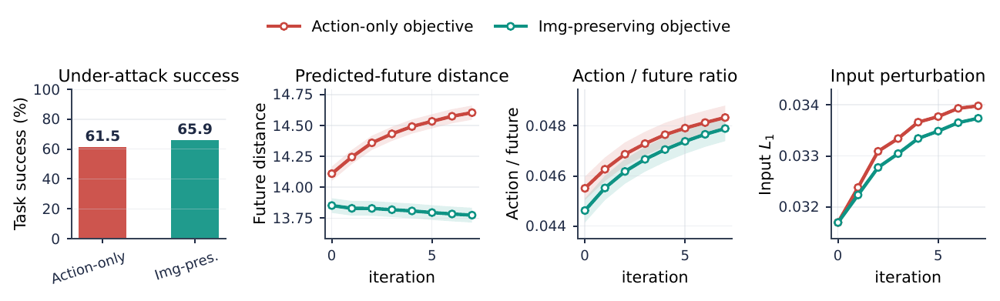
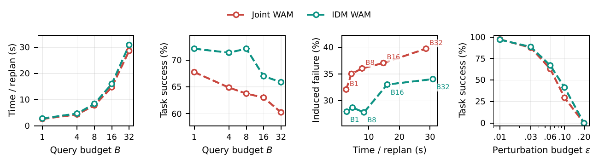
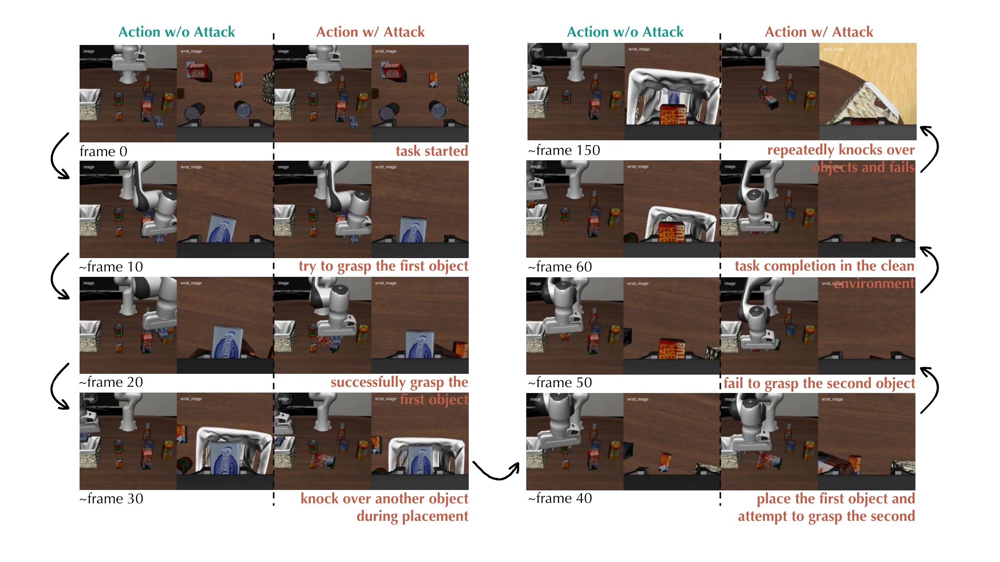
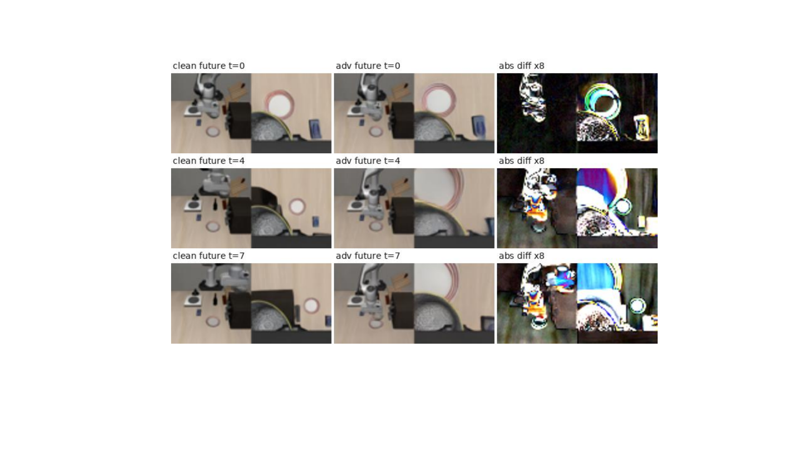
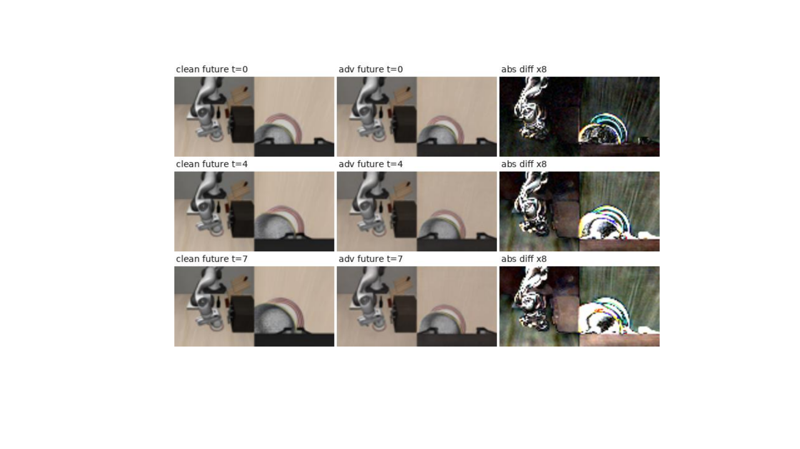

Action-only adversarial attack
The attacker maximizes the deviation between clean and attacked action chunks under a bounded visual perturbation. This captures high-strength action hijacking when disruption is the main goal.
Project page · Preprint
1National University of Singapore · 2The Hong Kong Polytechnic University · †Corresponding author
BadWAM shows that a world action model can appear to imagine a plausible future while executing actions that have been adversarially shifted toward task failure.
Abstract
World-action models (WAMs) couple action generation with future world prediction, a design often viewed as a source of robustness, interpretability, and safety. BadWAM challenges this assumption. It models World-Action Drift Attacks: a new class of WAM-specific adversarial attacks that use small visual perturbations to break the alignment between what a WAM imagines and what it executes.
BadWAM instantiates two complementary objectives. The action-only adversarial attack prioritizes disruption by driving the model toward task-failing actions. The imagination-preserving adversarial attack additionally keeps the predicted future close to the clean imagination, producing a stealthier failure mode. Across WAM variants and closed-loop robot tasks, BadWAM substantially reduces task success and shows that plausible imagined futures alone are not sufficient evidence of safe execution.
Method
The attacker maximizes the deviation between clean and attacked action chunks under a bounded visual perturbation. This captures high-strength action hijacking when disruption is the main goal.
The attacker still shifts the action, but regularizes the predicted future to remain close to the clean imagination. This creates a stealthier WAM-specific failure.
Small replan-level shifts accumulate through robot execution, especially on spatial and long-horizon tasks where timing and geometry leave little tolerance for action drift.


Main results
LIBERO success under action-only attack.
LIBERO success under action-only attack.
LIBERO success under action-only attack.
Action-only WAM success under the same attack protocol.



Analysis


Qualitative cases



Qualitative examples
We show cropped rollout videos comparing clean and attacked executions.
Citation
@article{li2026badwam,
title = {BadWAM: When World-Action Models Dream Right but Act Wrong},
author = {Li, Qi and Yang, Xingyi and Wang, Xinchao},
journal = {arXiv preprint arXiv:2607.15207},
year = {2026}
}